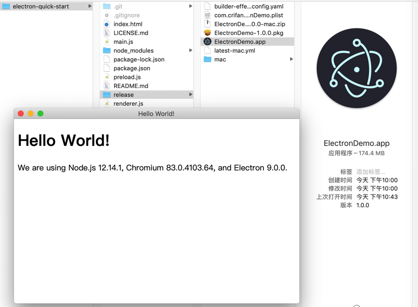

Electron打包和部署
用Electron开发完桌面应用后，接着需要把代码打包在一起发布出来，叫做：打包 或 部署 或 发布
常见打包packaging工具
目前主要有3种可以用来打包Electron应用的工具：
electron-forgeelectron-builder- 官网
- GitHub
- 文档
- 不同部分，分页显示的
- 全部文档在一起的，单页显示的
electron-packager
更多内容详见官网：
用electron-builder打包
下面举例用electron-builder去打包Electron的应用。
Mac中用electron-builder打包
此处介绍如何在Mac中用electron-builder去打包Electron的应用，生成Mac中的app和pkg文件。
安装electron-builder
npm install -D electron-builder@21.2.0
添加build配置
以及给package.json加上必要的build的配置，主要增加的部分是：
{
"scripts": {
"pack": "electron-builder --dir",
"dist": "electron-builder",
"dist_all": "electron-builder -mw"
},
"build": {
"productName": "ElectronDemo",
"appId": "com.crifan.electronDemo",
"copyright": "Copyright © 2020 ${author} String",
"directories": {
"output": "release"
},
"mac": {
"category": "public.app-category.developer-tools",
"type": "distribution",
"target": [
"pkg",
"zip"
]
}
},
}
更新后package.json完整配置如下：
{
"name": "electron-quick-start",
"version": "1.0.0",
"description": "A minimal Electron application",
"main": "main.js",
"scripts": {
"start": "electron .",
"pack": "electron-builder --dir",
"dist": "electron-builder",
"dist_all": "electron-builder -mw"
},
"repository": "https://github.com/electron/electron-quick-start",
"keywords": [
"Electron",
"quick",
"start",
"tutorial",
"demo"
],
"author": "Crifan Li",
"license": "CC0-1.0",
"devDependencies": {
"electron": "^9.0.0",
"electron-builder": "^21.2.0"
},
"build": {
"productName": "ElectronDemo",
"appId": "com.crifan.electronDemo",
"copyright": "Copyright © 2020 ${author} String",
"directories": {
"output": "release"
},
"mac": {
"category": "public.app-category.developer-tools",
"type": "distribution",
"target": [
"pkg",
"zip"
]
}
},
"dependencies": {}
}
打包
然后去打包
npm run dist
打包后输出文件：
~/dev/src/electron/electron-quick-start/release master ● tree -L 2 .
.
├── ElectronDemo-1.0.0-mac.zip
├── ElectronDemo-1.0.0.pkg
├── builder-effective-config.yaml
├── com.crifan.electronDemo.plist
├── latest-mac.yml
└── mac
└── ElectronDemo.app
2 directories, 5 files
其中：
ElectronDemo-1.0.0-mac.zip- 解压得到
ElectronDemo.app- 双击即可运行
- 效果截图
- 
- 效果截图
- 双击即可运行
- 解压得到
ElectronDemo-1.0.0.pkg- 双击即可安装
- 双击即可安装